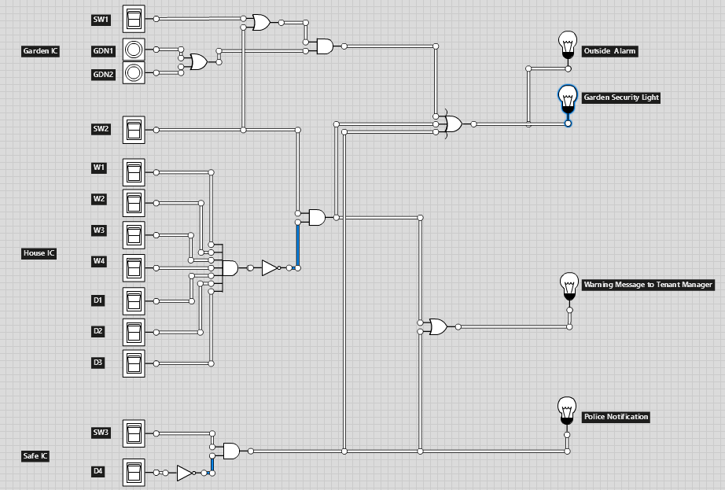
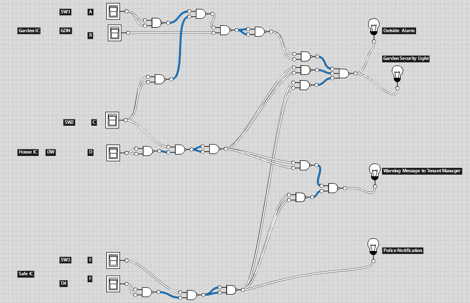
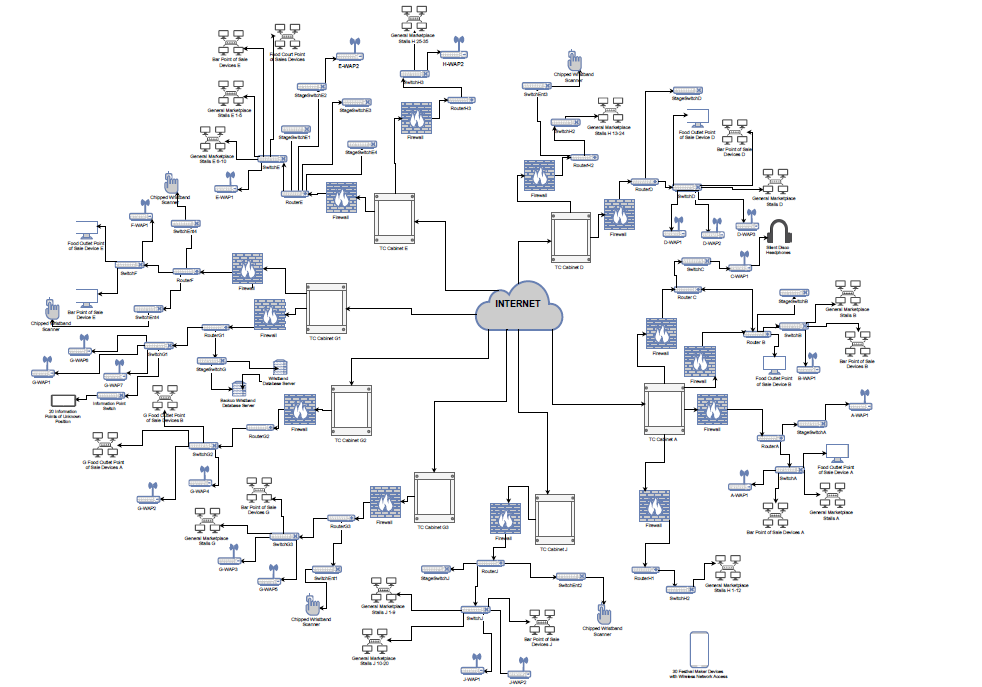
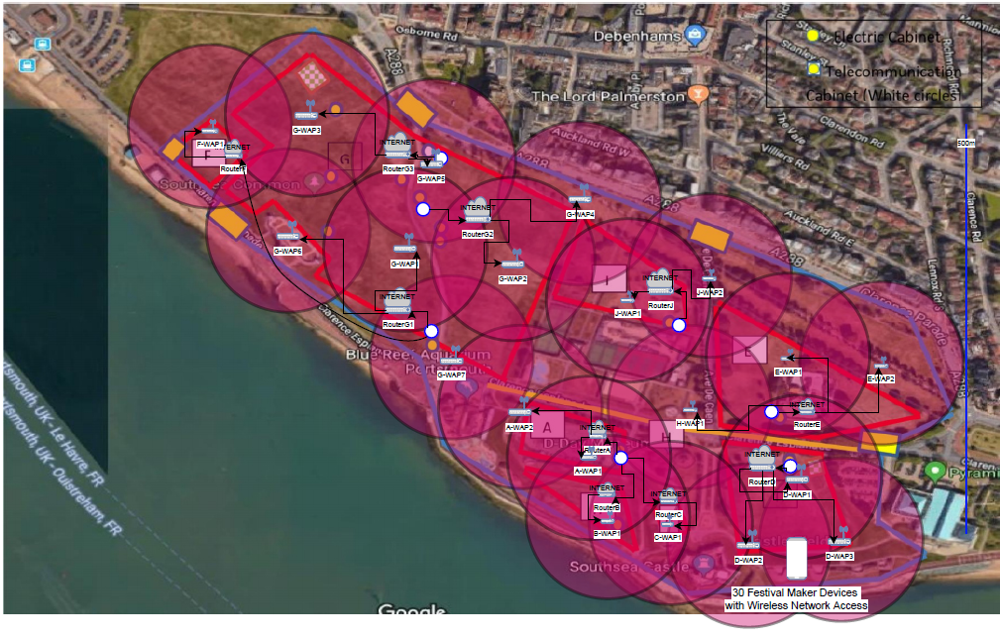

University Coursework Portfolio
Detailing of the coursework completed while studying for BSc (HONS) Computer Science qualification at the University of Portsmouth. The work completed in the second and third years (along with undertaken exams) contributed to attaining a 'First Class' qualification.
This page is structured such that each section looks at each year at university, and each subheading of each year describes the work undertaken for a particular unit.
Year 3
Indiviual Project
In my final year I chose to complete an individual project based around developing an Android app for novice programmers that delivered Parson's problems, used to test the users skills in Java. This topic was driven by the academic impetus that many studies have been undertaken which suggest that Parson's problems may be more beneficial to a beginner programmer's learning than traditional code writing and code reading exercises. The report for the project details the development process including a literature review and sections on requirements, design, implementation, and evaluation, and can be read here. The repo for the app is over here.
Security and Cryptography
This unit was conducted in two parts. The first looked at general security (such as digital certificates, PKIs and security protocols) and the second part looked more explicitly at cryptographic methods (such as ancient and modern ciphers, key exchange, hashing functions and secure random number generation). This unit didn't produce anything that interesting to look at as each of the assessments where either exams/tests or coursework that was tasked with answering exam style questions.
In the near future I would like to implement the basic cryptography tools (Frequency Analyser, Index of Coincidence, Caesar en/decipher, Substitution en/decipher, Vigenere en/decipher), to develop my C++ skills. When that is done I'll link to a repo here.
Distributed Systems and Security
This unit was also divided into two parts. The first looked at principles on distributed systems and in doing so I produced a research poster on comparing routing algorithms in wireless mobile ad hoc networks. This can be read here.
The second part of this unit overlapped somewhat with the first part of the previous unit, however it looked more explicitly at the security concerns of distributed systems by considering security at the application, transport, and network layers of the OSI model.
Theoretical Computer Science
As this unit was was wholly assessed with exams, again, there is not much interesting to show. Throughout this unit a greater understanding of computational theory was established by studying topics on formal languages and models of computing such as: languages and grammars, regular languages and regular expressions, the Chomsky hierarchy of languages, finite automata, pushdown automata, turing machines, and determinism. This area of study also looked at the problem and computability theory surrounding P/NP/NP-complete/NP-hard problems.
Fuzzy Systems and Networks
This unit introduced to me concepts around fuzzy logic, and the theoretical systems that expand on fuzzy logic to create fuzzy systems and networks that can be used in different applications such as system control, recognition, prediction and diagnosis. As part of the assessment for this unit I wrote a research paper on the application of a Simple Fuzzy System for PWR control which can be read here.
Year 2
3D Computer Graphics and Animation
In this I unit studied theoretical concepts of 3D graphics such as modelling methods, lighting models and the graphics pipeline. As well as this, animation principles such as key framing. This theory was put into practice in the coursework where I had to produce a render of a human body in a setting as well as render a video animation of some non-trivial human activity. While I was not fully satisfied with my render of a person or the animation, the clarity of the report demonstrating the techniques used in 3ds Max helped to maintain a decent mark.
The report for this coursework can be seen here , and the video animation can be watched below.
Advanced Programming Concepts
This unit furthered programming skills acquired in the first year, focusing more on using Java. As such, a box ordering system using Swing/AWT with Java was developed with three other students. The repository for my fork of that program can be seen here. and the development report for the coursework can be seen here.
In the second half of the unit we studied more theoretical concepts around programming languages such as context free gammars and compilers.
Computer Operating Systems and Intermediate Networking
This unit looked furthered our knowledge in the role of the operating system and the concerns surrounding them. To investigate this we needed to have a decent undertanding of Java to run experiments that thinking about threads and race conditions, mutual exclusion, synchronisation, remote method invocation, file primitives and parallel programming.
The second part of the unit furthered networking knowledge by investigating static and dynamic routing, addressing, and sub-netting and supernetting. The Riverbed Academic Modeller was used to simulate networks using the RIP and OSPF routing protocols.
The work for this unit is catalogued in a 'lab book' maintained throughout the completion of the unit that can be seen here.
Data Structures and Algorithms
As this unit was exam assessed, there is little to show off, however, in studying this unit, a far greater understanding of algorithms from a theoretical perspective was achieved. As such I gained knowledge on how to consider the order of complexity of certain algorithms, as well as an understanding of data structures I had not previously met such as Binary Search Trees.
In preparation for the unit I attempted to implement some of the algorithms that would be discussed in Python and Java. This can be seen here.
Discrete Mathematics and Functional Programming
This unit introduced several mathematical concepts core to the study of Computer Science, such as: logic, set theory, functions, relations, and graph theory.
The second part of this unit used Haskell to teach functional programming concepts. I particularly enjoyed this as I was impressed at how the expressiveness of functional programming meant that quite complex routines could be written in a brief way. See the program I wrote for this unit here.
Introduction to Software Engineering
This unit aimed to provide the skills for working in a modern software engineering team working environment. Working with a team of four other students, we produced development documentation such as requirements, designs, and testing schemes. That documentation can be seen here. Unfortunately I have not been able to retrieve the source code for this project.
Year 1
Computer Architecture
In the Computer Architecture unit of my course I exlpored topics such as boolean algebra, logic circuits, CPU design and the role of operating systems. The four pieces of coursework that follow were produced in collaboration with two other classmates.
For the first coursework, we were tasked with designing an intrusion logic circuit that needed to consider certain switches representing doors and windows that would output the appropriate alarm for specific situations. The circuit was designed using Logicly and a screenshot of the circuit is shown below.
In the second coursework for the unit, we aimed to optimise and prove the optimisation of out Intrusion Circuit developed during the previous coursework. Through using boolean algebra and Karnaugh maps, we were able to demonstrate that the circuit we developed in CW1 was optimised. We were also tasked with simplifiying and converting our Intrusion Circuit into a circuit entirely comprised of a universal gate of our choice. We chose to convert our circuit into a NAND only circuit. Pictured below is that simplified circuit, and the demonstration of the circuit's optimisation can be seen here.
In our third coursework for the unit we were tasked with creating a poster which discussed the functional elements surrounding a CPU as well as covering topics such as von Neumann architecture and the fetch-execute cycle. See this poster here.
In our final coursework for the unit we prepared a presentation to discuss a hypothetical operating system for a hypothetical Augmented Reality glasses device. Read that here.
Web Foundations 1
In this unit I developed an understanding of concepts surrounding the web as well as developing academic research skills and designing website that consider accessiblity, usability and semanticism. A literature review for on the topic of mitigating corporate information exposure can be read here. The website developed or this unit is not included in this portfolio as it featured no functions more advanced than what is presented by this website.
Network Fundamentals
In this unit I developed skills involved with the theory and implementation of networked systems including looking at the relevant standards utilised in network design. The coursework for the netfun module was completed in a group with three other students. Part of the assessment included how we managed and balanced the work as a group, however, the assessment centered more around the design, analysis, and simulation of a logical and physical network design to the specification of a given brief. The written report of the coursework can be accessed here, but below are pictured the logical and and physical design overviews of the network.
 Introduction to Database Design and Development
In this unit I studied the fundamental concepts involved in the process designing and developing a database and the business relevancy of databases. For a given case study, I developed a level 0 and level 1 data flow diagram to illustrate the relevant data flows between entities within the system. I continued work based around the case study by developing an entity relationship diagram for the various entities involved. We needed to consider the cardinality of the relationships as well as ensure the ERD was normalised to the third normal form. The final coursework for this unit entailed the development of an SQL database from a given ERD and dataset. We then needed to come up with some queries that would provide useful business information. The report for that coursework can be seen here.
Introduction to Programming
This unit introduced basic programming concepts such as data types, classes and code quality while utilising the Python and Java programming languages.
The first coursework was conducted in Python and aimed to develop a patchwork sampler program using the John Zelle graphics library. A .zip file containing the Zelle library and my submission can be downloaded here.
The second coursework was conducted in Java and aimed to develop a graphical Pizza Ordering system. A .zip of the files used in this program can be downloaded here. Alternately, a BlueJ project file of the system can be downloaded here.